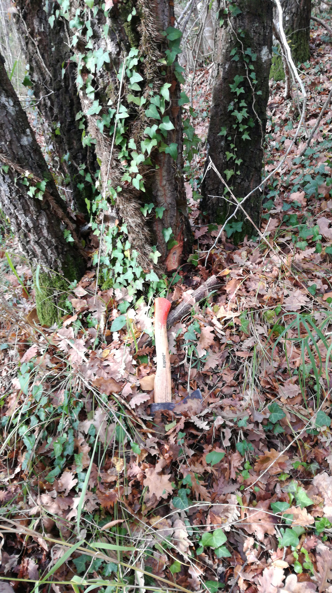
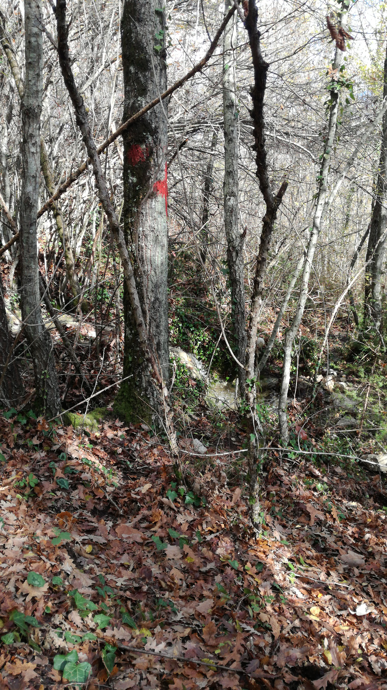

Servizi e Portfolio
Progettazione Forestale
Cos'è la progettazione forestale?
I boschi fanno parte del nostro patrimonio naturale e sono considerate degli ecosistemi multifunzionali. Le foreste offrono una serie di benefici (i servizi ecosistemici) che sono fondamentali per la nostra società (produzione di energia, cibo, regolazione del clima, protezione della biodiversità, ecc.). Una gestione forestale si rende necessaria per massimizzare uno o più servizi ecosistemici a seconda dell'obiettivo che si vuole perseguire. Il progetto forestale, a firma di un tecnico abilitato, sancisce le modalità di utilizzo del bosco.
Cosa significa gestire un bosco?
La gestione forestale è una disciplina molto complessa ed esiste una scienza alla base, chiamata selvicoltura, che permette l'utilizzo della risorsa senza che ne venga intaccata la sua continuità nel tempo. L'utilizzazione forestale (taglio degli alberi e rinnovazione degli stessi) non va assolutamente confusa con il termine deforestazione (cambiamento della copertura del suolo), che peraltro è vietata da leggi nazionali.


